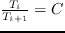

L'algorithme ``Replica Exchange'' (RE) est une extension du Monte-Carlo , Les paramètres d'un protocole RE sont ceux d'un protocole Monte-Carlo plus d'autres paramètres:
- le nombre de marcheurs
- la température pour chaque marcheur
- la période de ``swap'', c'est-à-dire la période (en nombre de pas) à laquelle le test de Hasting sur l'échange de température et éventuellement l'échange ,sont effectués.
Pour avoir des exécutions en parallèle sans plusieurs marcheurs par coeur du processeur, nous limiter nos tests à quatre ou huit marcheurs.
La distribution des températures est un éléments déterminant dans le comportement des marcheurs, car c'est elle qui pilote en grande partie le taux d'acceptation des échanges de températures. Nous suivant l'idée proposée par Kofke de lui faire suivre une progression géométrique (
, avec C une constante) refRE1,refRE2,refRE3. Ceci garantie alors que le taux d'acceptation d'échange entre
 soit égale pour tout nos i.De plus nous souhaitons centrer à peu près, nos distributions sur la température ambiante.
Voici les températures pour le RE quatre marcheurs:
- 10, 1, 0.1 et 0.01
- 2, 1, 0.5 et 0.25
- 1, 0.5, 0.25 et 0.125
,et celles pour le RE huit marcheurs:
- 3 , 2 , 1.333 , 0.888 , 0.592 , 0.395 , 0.263 et 0.175
- 10 , 3.16 , 1 , 0.316 , 0.1 , 0.0316 , 0.01 et 0.00316
Ici les protocoles ne se font qu'avec une seule trajectoire par marcheur. Et la contrainte du temps de calculs se comprends comme vingt-quatre heures de calculs cumulées sur tous les marcheurs.
Ainsi les longueurs de trajectoire sont définit pour le RE quatre marcheurs comme le quart d'une trajectoire MC, pour le RE huit marcheurs comme le huitième.
La table ![[*]](/usr/share/latex2html/icons/crossref.png) donne les probabilités utilisées par les cinq balises qui contrôlent les modifications de la séquence/conformation à chaque pas, dans l'ordre de la liste de la section .
donne les probabilités utilisées par les cinq balises qui contrôlent les modifications de la séquence/conformation à chaque pas, dans l'ordre de la liste de la section .
Table:
Les protocoles Replica Exchange
|
| Nom |
marcheurs |
Temp |
Traj (mega) |
seuil voisin |
Proba |
swap period (mega) |
| 1-7
RE4a |
4 |
10<->0.01 |
1500 |
10 |
1; 0; 0.1; 0 ;0 |
7.5 |
| RE4b |
4 |
1<->0.125 |
1500 |
10 |
1; 0; 0.1; 0 ;0 |
7.5 |
| RE4c |
4 |
2<->0.25 |
1500 |
10 |
1; 0; 0.1; 0 ;0 |
7.5 |
| RE8a1 |
8 |
10<->0.00316 |
750 |
10 |
1; 0; 0.1; 0 ;0 |
1 |
| RE8a2 |
8 |
10<->0.00316 |
750 |
0 |
1; 0; 0.1; 0 ;0 |
2.5 |
| RE8b1 |
8 |
3<->0.175 |
750 |
10 |
1; 0; 0.1; 0 ;0 |
7.5 |
| RE8b2 |
8 |
3<->0.175 |
750 |
10 |
0; 1; 0.1; 0 ;0 |
7.5 |
| RE8b3 |
8 |
3<->0.175 |
750 |
10 |
0; 1; 0.1; 0 ;0 |
1 |
|
|
|
|
|
|
|
|
mignon
2015-06-29